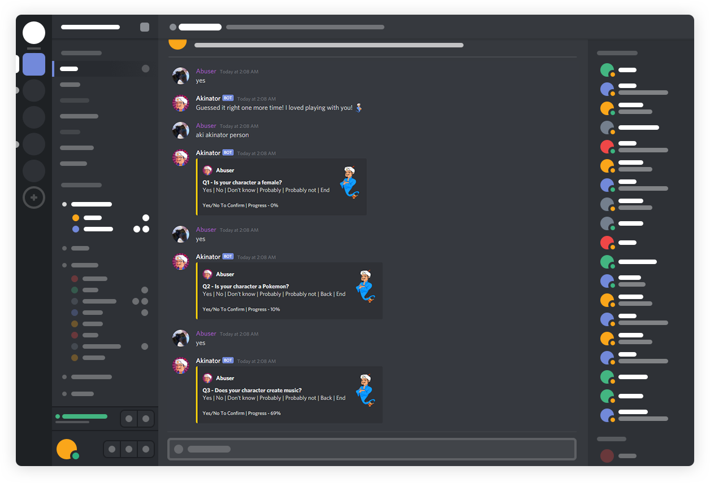

Main Commands
aki aki [person, animal, object] - Starts the Akinator Game!
aki ping - Returns the ping of the bot.
aki info - Returns the information of the bot.
end - Ends the current akinator game.
Moderator Commands
aki serverinfo - Returns the Server Statistics.
aki userinfo - Returns the information of the mentioned user.
aki roleinfo - Returns the information about the mentioned role/role ID.
aki channelinfo - Returns the information about the mentioned channel.
aki poll - Create a poll.
aki uptime - Returns the uptime of the bot.
Akinator Soundboard
ahh - alia - copystrike - daddy - depress - firefly - fucknig - jeff - lambo - leave
- moan - nani - ohh - reee - seinfeld - shrimp - shutdown - spaghet
- startup - suckyourmum - thomas - yeet - zedther
Customizable Commands
aki prefix - Change the prefix of Akinator.
aki lang - Returns the list of available languages in Akinator. To choose one, run 'aki aki person fr'
Miscellaneous Commands
aki ping - Returns the ping of the bot and the shard.
aki stats - Returns the statistics of Akinator.
aki vote - Returns the vote links for Akinator! Thank you for voting!
aki donate - Returns the Patreon link for Akinator.
aki fans - Returns the link for Akinator's Official Server!
aki os - Returns the information about the server.
